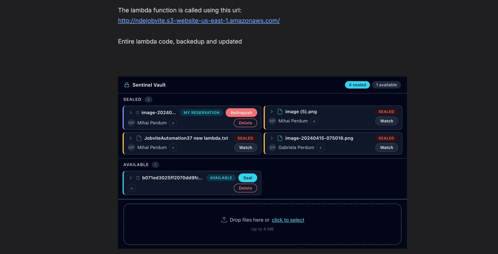
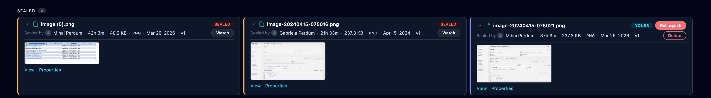
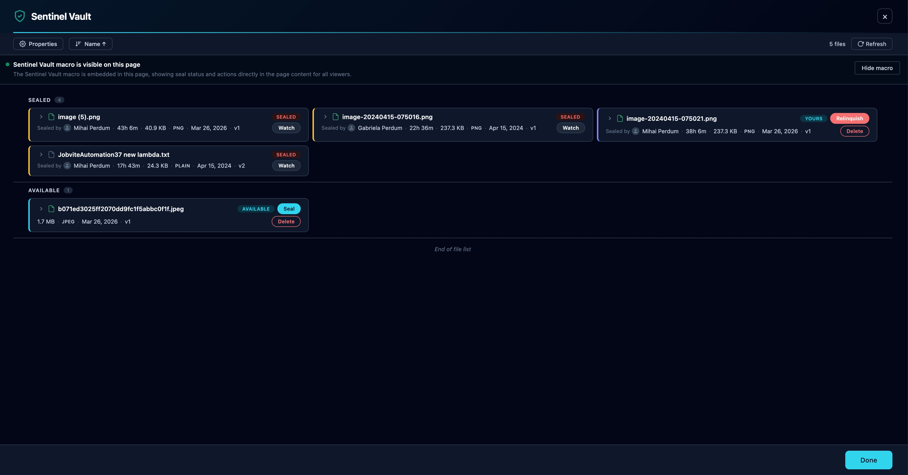
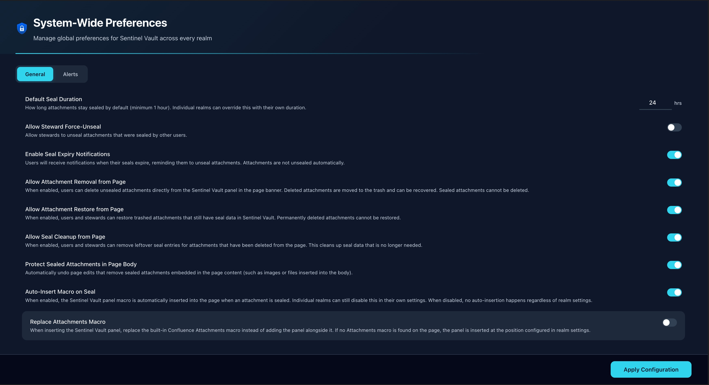
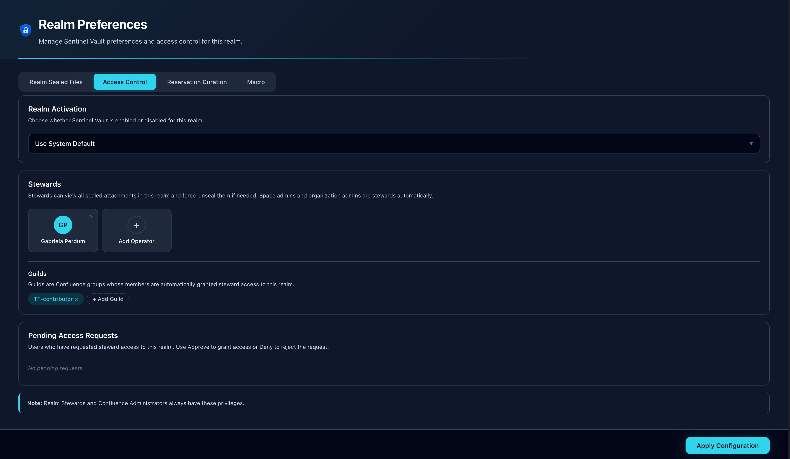

Attachment protection & concurrent-edit prevention for Confluence Cloud
Sentinel Vault is an Atlassian Forge app that adds file locking (sealing), real-time violation detection, and automatic reversion to Confluence Cloud attachments.
Confluence has no native file-locking mechanism. Any user with edit access can upload a new version of any attachment at any time. This leads to concurrent edit conflicts, accidental overwrites, and no way to know who was supposed to be editing a file. Sentinel Vault solves these problems by adding a seal (lock) layer on top of Confluence attachments.
Beyond protection, Sentinel Vault provides full attachment management — upload, label, delete, restore — and multi-channel notifications that keep everyone informed about file status changes.
After your Confluence site administrator installs Sentinel Vault, you can start using it immediately:
The inline panel is the primary interface for Sentinel Vault. It's a macro block embedded directly in your Confluence page content, showing every attachment on the page with its current seal status.

The inline panel with grouped Sealed and Available sections, seal/unseal controls, and upload zone
Click the expand arrow on any attachment to reveal additional details:

Expanded cards with thumbnail previews, View and Properties links, and full metadata
The overlay is a full-screen modal for comprehensive attachment management. Open it by clicking Manage Attachments in the page banner or from within the inline panel.

The overlay with toolbar, sealed/available grouping, and expanded card details
A seal is a platform-enforced lock on a specific attachment. When you seal an attachment:
Other users see the seal status and who holds it. Seals are enforced at the platform level — not just a visual indicator. If another user attempts to modify the sealed attachment, Sentinel Vault intervenes automatically.
Only the seal holder can unseal their own attachment. Space stewards can force-release seals when the Allow Steward Force-Unseal setting is enabled.
Sentinel Vault monitors three types of violations in real time and responds automatically to each.
When someone uploads a new version of a sealed attachment:
If someone moves a sealed attachment to the trash, Sentinel Vault automatically restores it. If the file has been permanently deleted (bypassing trash), all seal records are cleaned up and the seal owner is notified.
If a sealed attachment is embedded in the page body (e.g., as an inline image or file preview) and someone edits the page to remove that embed:
When you need to edit a file that's currently sealed by someone else, you don't have to keep checking back. Click Watch on any sealed attachment and you'll receive an email notification the moment the seal is released — whether manually, by expiry, or by steward override.
Sentinel Vault extends beyond sealing to provide full attachment lifecycle management. Each capability is controlled by a separate administrator toggle, so your team only sees the actions that are appropriate for your workflow.
| Action | What It Does | Admin Setting |
|---|---|---|
| Upload | Drag and drop or click to upload new attachments (up to 4 MB per file) | Always available |
| Labels | Add and remove labels on any attachment for organization and filtering | Always available |
| Delete | Remove unsealed attachments from the page (moves to Confluence trash). Sealed attachments cannot be deleted. | Allow Attachment Removal |
| Restore | Recover trashed attachments that still have seal data in Sentinel Vault | Allow Attachment Restore |
| Purge | Clean up leftover seal records for attachments that have been permanently deleted from Confluence | Allow Seal Cleanup |
Sentinel Vault dispatches notifications through five independent channels. Each can be enabled or disabled globally in the Steward Console.
| Channel | Description | Visibility |
|---|---|---|
| Toast Messages | In-app popup notifications for immediate feedback on seal/unseal actions | Current user session |
| Page Banners | Persistent ribbon alerts at the top of the affected Confluence page | All page visitors |
| Page Comments | Automated comments posted to the page footer, tagging involved users with @mentions | All page viewers |
| Email Alerts | Templated HTML emails for seal confirmations, violations, reminders, and releases (8 email types) | Email recipients |
| Watch Notifications | Release emails sent to users who are watching a sealed attachment | Watchers only |
Sentinel Vault sends eight distinct email types, each with its own professionally designed HTML template:
The Steward Console is accessible via Confluence Administration → Apps → Sentinel Vault Admin. Only site administrators can access this panel. It controls system-wide behavior across two tabs.

The Steward Console General tab with all global settings
| Setting | Description | Default |
|---|---|---|
| Default Seal Duration | How long attachments stay sealed (hours, minimum 1). Individual spaces can override this. | 24 hours |
| Allow Steward Force-Unseal | Allow stewards to unseal attachments sealed by other users | Off |
| Enable Seal Expiry Notifications | When on, users get expiry notifications and seals are released automatically. When off, seals persist past expiry with periodic reminders. | On |
| Allow Attachment Removal | Users can delete unsealed attachments from the panel (moves to trash) | Off |
| Allow Attachment Restore | Users and stewards can restore trashed attachments with seal data | Off |
| Allow Seal Cleanup | Users and stewards can purge leftover seal entries for deleted attachments | Off |
| Protect Sealed Attachments in Page Body | Automatically undo page edits that remove sealed media embeds | On |
| Auto-Insert Macro on Seal | Automatically insert the Sentinel Vault panel when an attachment is sealed | Off |
| Replace Attachments Macro | When inserting the panel, replace the built-in Confluence Attachments macro (only visible when auto-insert is on) | Off |
| Reminder Frequency | How often to send periodic reminder emails, in days (only visible when expiry notifications are off) | 7 days |
| Setting | Description | Default |
|---|---|---|
| Pop-up Notifications | In-app toast popups for seal/unseal actions and violations | On |
| Page Status Banners | Persistent banner at the top of pages with sealed attachments | On |
| Page Comments | Confluence comments posted on seal events with @mentions | On |
| Email Notifications | Master toggle for all email types (must be on for sub-options to work) | On |
| Seal Confirmation Emails | Confirmation email after sealing (nested under email toggle) | On |
| Seal Expiry Reminder Emails | Reminder when a seal has expired (nested under email toggle) | On |
| Recurring Reminder Emails | Periodic reminders when expiry notifications are off (nested under email toggle) | On |
The Realm Console is accessible via Space Settings → Apps → Sentinel Vault. The tabs you see depend on your role in the space.

The Realm Console Access Control tab with realm activation, stewards, guilds, and pending requests
View all attachments you have sealed in this space. Each card shows the file name, page location, seal date, and time remaining. Click Relinquish to release any of your seals. Regular users also see a banner to Request Steward Access if they want elevated permissions.
View all sealed attachments across the entire space with column picker, sort controls, force-unseal, and watch. Supports pagination for spaces with many sealed files.
Use the system default seal duration or set a custom per-space duration (in hours) that overrides the global default.
Configure auto-insertion of the Sentinel Vault panel macro for this space and choose whether the macro is inserted at the top or bottom of the page.
| Role | Who | Capabilities |
|---|---|---|
| Operator | Any Confluence user with page edit access | Seal/unseal their own attachments, view seal status, watch others' seals, upload, label, request steward access |
| Realm Steward | Space administrators & delegated users | All operator capabilities + force-unseal, access control, realm policy, seal audit, approve/deny access requests |
| Guild Member | Members of designated Confluence groups | Same as Realm Steward — all guild members automatically receive steward privileges in the configured space |
| Site Administrator | Confluence site/org admins | Full access: global settings via Steward Console, steward capabilities in all spaces |
Steward status is determined by any of: Confluence space ADMINISTER permission, membership in a configured guild, explicit steward delegation, or site/org admin status.
Regular users who need steward capabilities can request access from the Realm Console. The request appears in the Access Control tab for stewards to review. If denied, the user may re-request after 48 hours.
Every seal has a duration, after which it is eligible for automatic release. The effective duration is resolved in order:
| Task | Frequency | Purpose |
|---|---|---|
| Expiry Sweep | Hourly | Releases expired seals (when expiry notifications enabled), sends halfway reminder emails at 50% duration, sends expiry notification emails |
| Seal Index Cron | Hourly | Rebuilds performance indexes for realm seal lookups, using timestamp optimization to skip unnecessary scans |
| Recurring Nudge | Daily | Sends periodic reminder emails about sealed attachments (only when expiry notifications are disabled) |
| Realm Scan Consumer | On demand | Background queue processor for space-level seal auditing, triggered by stewards from the Realm Console |
| Attachment Trigger | Real-time | Detects and responds to attachment updated, trashed, and deleted events |
| Page Content Trigger | Real-time | Detects removal of sealed media embeds from page content and surgically re-inserts them |
All scheduled tasks are managed by the Forge platform and require no manual intervention.
The inline panel macro can be customized per instance. Click the macro settings icon to configure:
| Setting | Options | Default |
|---|---|---|
| Column Visibility | Toggle: name, status, seal owner, labels, comment, actions, file size, file type, expiry | All visible |
| Items Per Page | 5, 10, 15, or 25 | 15 |
| Cards Per Row | 1, 2, or 3 | 2 |
| Show Upload Zone | On / Off | On |
These settings are stored per macro instance, so different pages can have different configurations.
Email notifications are powered by the Resend email delivery service. To enable email alerts:
forge variables set RESEND_API_KEY your-resend-api-key| Constraint | Limit | Notes |
|---|---|---|
| Upload file size | 4 MB | Per file, via the inline panel or overlay upload zone |
| Forge function timeout | 25 seconds | Realm scan consumer has extended 900-second timeout for large space audits |
| Seal duration | Configurable | Minimum 1 hour. Set via Steward Console or Realm Console. |
| Content protection retries | 3 attempts | Exponential backoff for version conflicts during page restoration |
| Email delivery | Per Resend plan | Free tier: 100 emails/day. 3 retries with exponential backoff on rate limits. |
| Steward re-request cooldown | 48 hours | After a denied steward access request |
All data is stored in Forge KVS within the Atlassian Cloud platform. The only external service is Resend for email delivery (optional), which receives only the notification content, not your file data.
Sentinel Vault is actively developed. Here's what's on the roadmap:
Allow one or multiple users to edit a sealed attachment without granting full steward permissions. Collaborative editing with controlled access — the seal owner approves who can edit.
Go beyond attachments. Lock specific sections of a Confluence page to prevent unauthorized edits to critical content areas — headings, tables, decision logs — while leaving the rest of the page editable.
Add rules and validations to Confluence pages that are enforced on create and edit. Ensure content meets standards — required fields, formatting rules, approval gates — before publishing.
AI-powered content validation using your own API keys (BYOK). Validate page content against custom rules, style guides, tone requirements, and compliance standards automatically.
Yes. Each attachment has its own independent seal. Multiple users can hold seals on different attachments on the same page simultaneously.
If expiry notifications are enabled (default), the seal will automatically expire after the configured duration. You'll receive a reminder email at the halfway mark. If expiry notifications are disabled, the seal persists and you'll receive periodic reminders.
Yes. Sealing prevents modification (uploading a new version), not viewing. All users with page access can still download and view sealed attachments.
If content protection is enabled (default), Sentinel Vault detects the removal and surgically re-inserts the sealed embed at its original position. Your other page changes are preserved — only the sealed media is restored.
Click Watch on any sealed attachment. You'll receive an email notification the moment the seal is released.
Guilds are Confluence groups assigned as steward teams in a space's Access Control settings. All members of a guild automatically have steward privileges in that space, without needing individual delegation.
Open the Realm Console from space settings. In the My Sealed Files tab, click "Request Steward Access." A steward will review your request. If denied, you can re-request after 48 hours.
These actions are disabled by default. A site administrator must enable them individually in the Steward Console General tab.
No. All seal records and configuration are stored in Forge KVS, which is hosted within the Atlassian Cloud platform. The only external service is Resend for email delivery (optional), which receives only the notification content, not your file data.
Email notifications will be silently skipped. All other channels (toast, banner, comment) continue to work normally. No errors are raised.